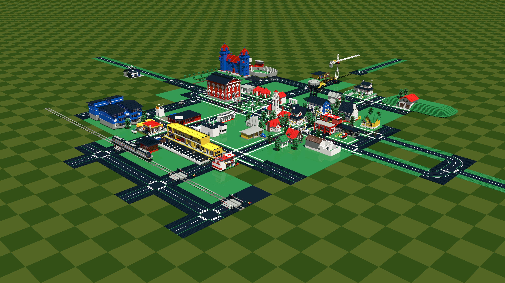

Datsville Town Views
- GH = Michael Horvath (GitHub)
- SF = Michael Horvath (SourceForge)
- GC = Michael Horvath (Google Code)
- TE = Tore Eriksson
- JVZ = John VanZwieten
Renders
- datsville_townview_revGH464.png

- datsville_townview_revGH442.png

- datsville_townview_revSF528.png

- datsville_townview_revTE013.png
- 